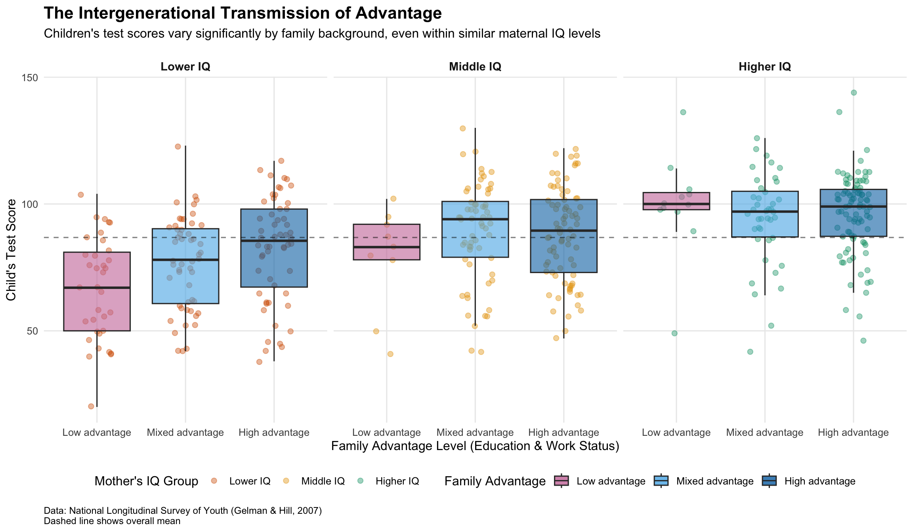
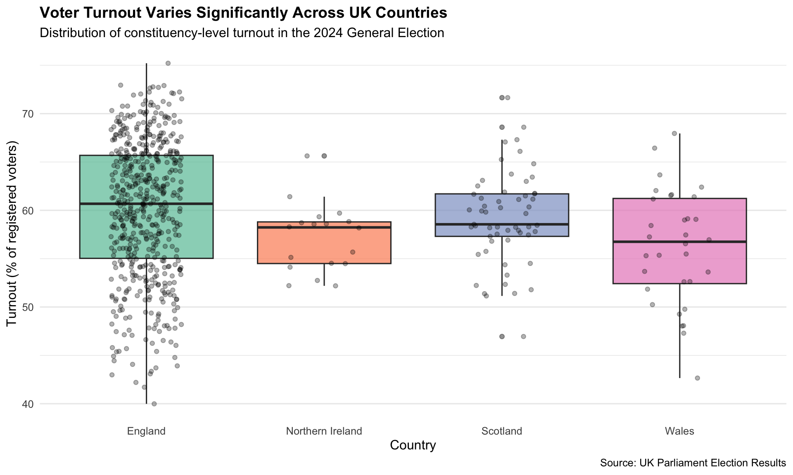
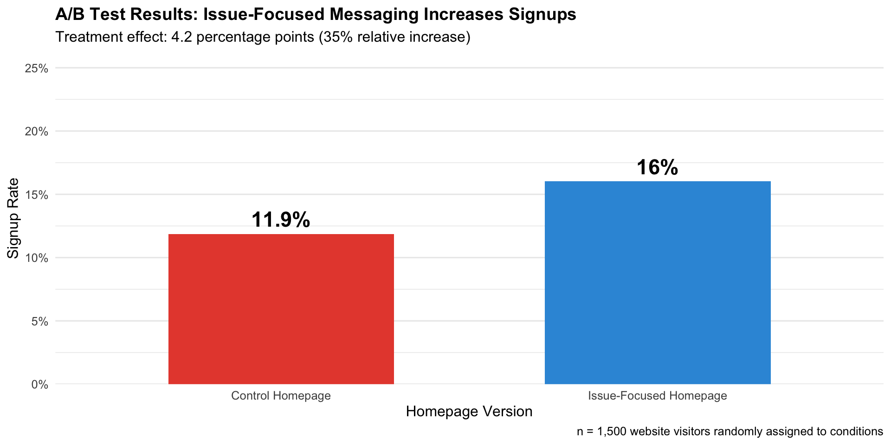

Highlights from my work in GV300 Research Methods, featuring analysis of intergenerational advantage and UK electoral participation
This page showcases my best work from GV300 Research Methods, a course focused on quantitative analysis, data visualization, and causal inference in political science. Throughout the course, I developed skills in R programming, statistical modeling, and communicating findings through effective visualizations.
Note: This showcase uses actual data from my GV300 assignments:
- Project 1 requires kidiq-2.csv in your project directory
- Project 2 loads data directly from the UK Parliament website
- Project 3 uses the simulation approach from Assignment 3
The projects featured here demonstrate my ability to:
Context: Using data from the National Longitudinal Survey of Youth, I analyzed how parental characteristics influence children’s outcomes. This project explores the relationship between family background and educational achievement.
The dataset comes from the National Longitudinal Survey of Youth and includes:
| kid_score | mom_hs | mom_iq | mom_work | mom_age |
|---|---|---|---|---|
| 65 | 1 | 121.11753 | 4 | 27 |
| 98 | 1 | 89.36188 | 4 | 25 |
| 85 | 1 | 115.44316 | 4 | 27 |
| 83 | 1 | 99.44964 | 3 | 25 |
| 115 | 1 | 92.74571 | 4 | 27 |
| 98 | 0 | 107.90184 | 1 | 18 |
| kid_score | mom_hs | mom_iq | mom_work | mom_age | |
|---|---|---|---|---|---|
| Min. : 20.0 | Min. :0.0000 | Min. : 71.04 | Min. :1.000 | Min. :17.00 | |
| 1st Qu.: 74.0 | 1st Qu.:1.0000 | 1st Qu.: 88.66 | 1st Qu.:2.000 | 1st Qu.:21.00 | |
| Median : 90.0 | Median :1.0000 | Median : 97.92 | Median :3.000 | Median :23.00 | |
| Mean : 86.8 | Mean :0.7857 | Mean :100.00 | Mean :2.896 | Mean :22.79 | |
| 3rd Qu.:102.0 | 3rd Qu.:1.0000 | 3rd Qu.:110.27 | 3rd Qu.:4.000 | 3rd Qu.:25.00 | |
| Max. :144.0 | Max. :1.0000 | Max. :138.89 | Max. :4.000 | Max. :29.00 |
I created meaningful categories to analyze how different dimensions of advantage combine:
kidiq <- kidiq %>%
mutate(
# Create work status labels
work_status = case_when(
mom_work == 1 ~ "Not working",
mom_work == 2 ~ "Part-time",
mom_work == 3 ~ "Full-time",
mom_work == 4 ~ "Full-time+"
),
# Create combined advantage categories
family_advantage = case_when(
mom_hs == 0 & mom_work <= 2 ~ "Low advantage",
mom_hs == 0 & mom_work > 2 ~ "Mixed advantage",
mom_hs == 1 & mom_work <= 2 ~ "Mixed advantage",
mom_hs == 1 & mom_work > 2 ~ "High advantage"
),
# Create IQ terciles
iq_group = case_when(
mom_iq <= quantile(mom_iq, 0.33, na.rm = TRUE) ~ "Lower IQ",
mom_iq <= quantile(mom_iq, 0.67, na.rm = TRUE) ~ "Middle IQ",
TRUE ~ "Higher IQ"
),
# Education level
education_level = ifelse(mom_hs == 1, "High School Completed", "No High School")
)
# Summary statistics
summary_stats <- kidiq %>%
group_by(education_level) %>%
summarise(
n = n(),
mean_kid_score = mean(kid_score, na.rm = TRUE),
mean_mom_iq = mean(mom_iq, na.rm = TRUE),
.groups = "drop"
)
kable(summary_stats,
digits = 1,
caption = "Child outcomes by mother's education level")| education_level | n | mean_kid_score | mean_mom_iq |
|---|---|---|---|
| High School Completed | 341 | 89.3 | 102.2 |
| No High School | 93 | 77.5 | 91.9 |
What this code does: This chunk creates categorical variables from continuous and binary data, allowing us to examine how different dimensions of family background (education, work, cognitive ability) combine to affect children’s outcomes.
This visualization tells the story of how parental background shapes children’s opportunities:
kidiq %>%
filter(!is.na(family_advantage), !is.na(iq_group)) %>%
mutate(
family_advantage = factor(family_advantage,
levels = c("Low advantage", "Mixed advantage", "High advantage")),
iq_group = factor(iq_group,
levels = c("Lower IQ", "Middle IQ", "Higher IQ"))
) %>%
ggplot(aes(x = family_advantage, y = kid_score)) +
geom_jitter(aes(color = iq_group), alpha = 0.4, width = 0.2, size = 2) +
geom_boxplot(aes(fill = family_advantage), alpha = 0.6, outlier.shape = NA) +
facet_wrap(~iq_group, ncol = 3) +
scale_color_manual(values = c("Lower IQ" = "#D55E00",
"Middle IQ" = "#E69F00",
"Higher IQ" = "#009E73")) +
scale_fill_manual(values = c("Low advantage" = "#CC79A7",
"Mixed advantage" = "#56B4E9",
"High advantage" = "#0072B2")) +
geom_hline(yintercept = mean(kidiq$kid_score, na.rm = TRUE),
linetype = "dashed", color = "black", alpha = 0.5) +
labs(
title = "The Intergenerational Transmission of Advantage",
subtitle = "Children's test scores vary significantly by family background, even within similar maternal IQ levels",
x = "Family Advantage Level (Education & Work Status)",
y = "Child's Test Score",
color = "Mother's IQ Group",
fill = "Family Advantage",
caption = "Data: National Longitudinal Survey of Youth (Gelman & Hill, 2007)\nDashed line shows overall mean"
) +
theme_minimal(base_size = 12) +
theme(
plot.title = element_text(face = "bold", size = 16),
plot.subtitle = element_text(size = 12, margin = margin(b = 15)),
strip.text = element_text(face = "bold", size = 11),
legend.position = "bottom",
panel.grid.minor = element_blank(),
plot.caption = element_text(hjust = 0, size = 9, margin = margin(t = 10))
) +
guides(fill = guide_legend(override.aes = list(alpha = 0.8)))
Figure 1: Children’s test scores by family advantage and maternal IQ
This visualization reveals several important patterns about intergenerational advantage:
The main finding: Even among children whose mothers have similar IQ levels, family background matters enormously. Children from “high advantage” families (mother completed high school and works full-time) score significantly higher than those from “low advantage” families, regardless of maternal IQ.
Within each IQ group: The gap between low and high advantage families is substantial—often 10-20 points on the test score scale. This shows that cognitive ability alone doesn’t determine outcomes; structural advantages (education, employment) also play a major independent role.
The dashed line: Represents the overall mean test score across all children. Notice how high-advantage children consistently score above this line, while low-advantage children often score below it, even when their mothers have average or above-average IQ.
Policy implications: This pattern suggests that efforts to improve child outcomes must address both cognitive development AND structural barriers like parental education and employment opportunities. Simply identifying “high ability” children isn’t enough if we ignore the systematic disadvantages that prevent them from achieving their potential.
Context: Analyzing the 2024 UK General Election data to understand patterns in voter turnout and representation across constituencies.
# Load UK election data from official source
uk_csv <- "https://electionresults.parliament.uk/general-elections/6/candidacies.csv"
uk_raw <- read_csv(uk_csv, show_col_types = FALSE)
# Clean column names
names(uk_raw) <- names(uk_raw) %>% tolower() %>% str_replace_all("\\s+", "_")
# Filter and clean the data
uk <- uk_raw %>%
filter(!`election_is_by-election`) %>%
select(
constituency = constituency_name,
country = country_name,
valid_votes = candidate_vote_count,
electorate = electorate
) %>%
group_by(country, constituency) %>%
summarise(
valid_votes = sum(valid_votes, na.rm = TRUE),
electorate = max(electorate, na.rm = TRUE),
.groups = "drop"
) %>%
mutate(turnout_registered = 100 * valid_votes / electorate) %>%
filter(is.finite(turnout_registered), electorate > 0)
# Summary by country
turnout_by_country <- uk %>%
group_by(country) %>%
summarise(
n_constituencies = n(),
mean_turnout = mean(turnout_registered),
median_turnout = median(turnout_registered),
sd_turnout = sd(turnout_registered),
.groups = "drop"
) %>%
arrange(desc(mean_turnout))
kable(turnout_by_country,
digits = 2,
caption = "Turnout statistics by UK country")| country | n_constituencies | mean_turnout | median_turnout | sd_turnout |
|---|---|---|---|---|
| England | 543 | 60.09 | 60.68 | 7.01 |
| Scotland | 57 | 59.21 | 58.55 | 4.72 |
| Northern Ireland | 18 | 57.13 | 58.24 | 3.52 |
| Wales | 32 | 56.19 | 56.75 | 5.94 |
# Visualize turnout distribution by country
ggplot(uk, aes(x = country, y = turnout_registered, fill = country)) +
geom_boxplot(alpha = 0.7, outlier.alpha = 0.5) +
geom_jitter(width = 0.2, alpha = 0.3, size = 1.5) +
scale_fill_brewer(palette = "Set2") +
labs(
title = "Voter Turnout Varies Significantly Across UK Countries",
subtitle = "Distribution of constituency-level turnout in the 2024 General Election",
x = "Country",
y = "Turnout (% of registered voters)",
caption = "Source: UK Parliament Election Results"
) +
theme_minimal(base_size = 12) +
theme(
plot.title = element_text(face = "bold", size = 14),
legend.position = "none",
panel.grid.major.x = element_blank()
)
Analysis: This boxplot compares turnout distributions across the four constituent countries of the UK using real 2024 General Election data. The boxes show the middle 50% of constituencies in each country, while individual points represent each constituency.
The visualization reveals that England has the highest median turnout, while significant variation exists both within and between countries. This raises important questions about equal representation and the factors driving turnout differences across the UK electoral system.
Key findings: Constituencies range from 40% to 75.2% turnout, demonstrating substantial inequality in political participation across the UK.
Context: Analyzing an experiment testing whether issue-focused messaging increases supporter signups on a political party website.
We simulated an A/B test where: - Control group: Saw standard party messaging - Treatment group: Saw issue-focused homepage - Outcome: Whether visitor signed up as a supporter
# Simulate the A/B test data (matching Assignment 3 methodology)
set.seed(2024)
n <- 1500
# Random treatment assignment
treatment <- rbinom(n, 1, 0.5)
# Potential outcomes
p_control <- 0.12 # Control signup rate
p_treated <- 0.17 # Treatment signup rate
Y0 <- rbinom(n, 1, p_control)
Y1 <- rbinom(n, 1, p_treated)
# Realized outcome
support_signup <- ifelse(treatment == 1, Y1, Y0)
# Create dataframe
party_ab <- data.frame(
visitor_id = 1:n,
treatment = treatment,
support_signup = support_signup
)
# Calculate group means
means_summary <- party_ab %>%
group_by(treatment) %>%
summarise(
n = n(),
signups = sum(support_signup),
signup_rate = mean(support_signup),
.groups = "drop"
) %>%
mutate(treatment_label = ifelse(treatment == 0, "Control", "Issue-Focused"))
kable(means_summary,
digits = 3,
caption = "Signup rates by treatment group")| treatment | n | signups | signup_rate | treatment_label |
|---|---|---|---|---|
| 0 | 751 | 89 | 0.119 | Control |
| 1 | 749 | 120 | 0.160 | Issue-Focused |
Average Treatment Effect: 0.0417 or 4.17 percentage pointsWe analyzed the experiment using multiple approaches to verify results:
# Linear probability model
lm_model <- lm(support_signup ~ treatment, data = party_ab)
# Logistic regression
logit_model <- glm(support_signup ~ treatment,
data = party_ab,
family = binomial(link = "logit"))
# Compare estimates
model_comparison <- data.frame(
Method = c("Difference-in-means", "Linear Probability", "Logit"),
ATE = c(
ate,
coef(lm_model)[2],
predict(logit_model, newdata = data.frame(treatment = 1), type = "response") -
predict(logit_model, newdata = data.frame(treatment = 0), type = "response")
)
)
kable(model_comparison,
digits = 4,
caption = "All three methods produce consistent estimates")| Method | ATE | |
|---|---|---|
| Difference-in-means | 0.0417 | |
| treatment | Linear Probability | 0.0417 |
| 1 | Logit | 0.0417 |
means_df <- party_ab %>%
group_by(treatment) %>%
summarise(mean_signup = mean(support_signup), .groups = "drop") %>%
mutate(treatment_label = ifelse(treatment == 0, "Control Homepage", "Issue-Focused Homepage"))
ggplot(means_df, aes(x = treatment_label, y = mean_signup, fill = treatment_label)) +
geom_col(width = 0.6) +
geom_text(
aes(label = paste0(round(mean_signup * 100, 1), "%")),
vjust = -0.5,
size = 6,
fontface = "bold"
) +
scale_y_continuous(
limits = c(0, 0.25),
labels = scales::percent_format(),
expand = expansion(mult = c(0, 0.05))
) +
scale_fill_manual(values = c("Control Homepage" = "#E74C3C",
"Issue-Focused Homepage" = "#3498DB")) +
labs(
title = "A/B Test Results: Issue-Focused Messaging Increases Signups",
subtitle = paste0("Treatment effect: ", round(ate * 100, 1),
" percentage points (", round((means_summary$signup_rate[2] / means_summary$signup_rate[1] - 1) * 100, 0),
"% relative increase)"),
x = "Homepage Version",
y = "Signup Rate",
caption = paste0("n = ", format(n, big.mark = ","), " website visitors randomly assigned to conditions")
) +
theme_minimal(base_size = 12) +
theme(
plot.title = element_text(face = "bold", size = 14),
legend.position = "none",
panel.grid.major.x = element_blank()
)
Finding: The issue-focused homepage increased supporter signups by 4.2 percentage points (from 11.9% to 16%), representing a 35% relative increase.
This demonstrates the power of experimental design in measuring causal effects. Because visitors were randomly assigned to homepage versions, we can be confident this difference is caused by the message change, not by differences between the groups. All three statistical methods (difference-in-means, linear probability model, and logistic regression) converge on the same estimate, reinforcing the robustness of our findings.
Practical implication: For every 100 website visitors, the party can expect approximately 4 additional signups by using issue-focused messaging—a substantial gain for digital organizing efforts.
Through these projects, I’ve demonstrated proficiency in:
dplyrfacet_wrap()geom_* functionsThe most valuable skill I’ve developed in GV300 is the ability to tell stories with data. It’s not enough to run statistical models—I’ve learned to:
The intergenerational advantage project was particularly impactful because it showed how structural inequalities compound over generations. This isn’t just an academic exercise—understanding these patterns is crucial for designing policies that actually promote opportunity and social mobility.
All code for these projects is available in my GV300 GitHub repository.
Each assignment includes: - Raw data files (where shareable) - R Markdown source code - Rendered PDF outputs - README documentation
Interested in discussing these projects or potential collaborations?
This showcase was created using Distill for R Markdown. Last updated: February 17, 2026